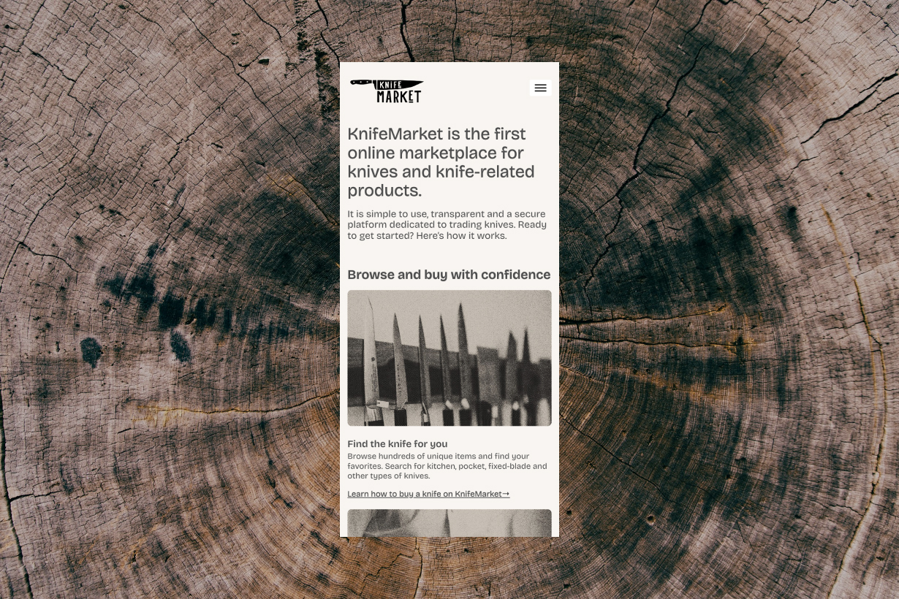
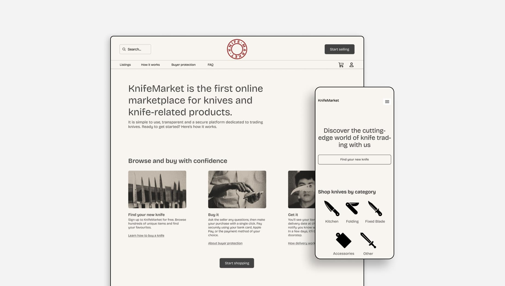
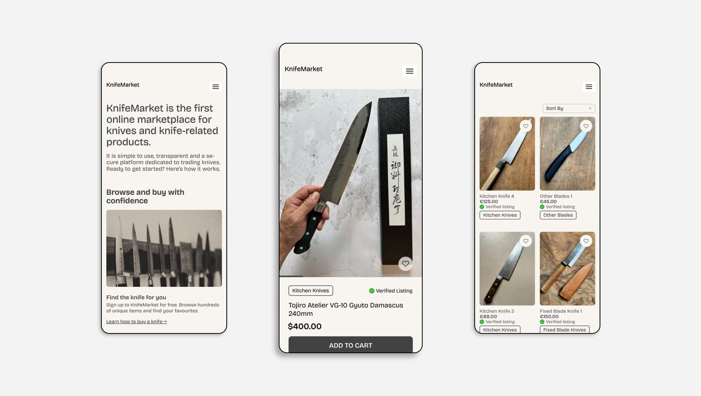

2023
KnifeMarket: Identity & Marketplace

Conceived and developed a new visual identity for KnifeMarket, with a redesign and coding of the existing website. The objective was to seamlessly align the platform with the brand's refreshed image. Special attention was given to optimizing navigation, ensuring improved usability and intuitiveness. The result is a website that mirrors the updated identity of KnifeMarket, and delivers a harmonious and user-friendly online experience.
Contributor: Gorazd Guštin.

